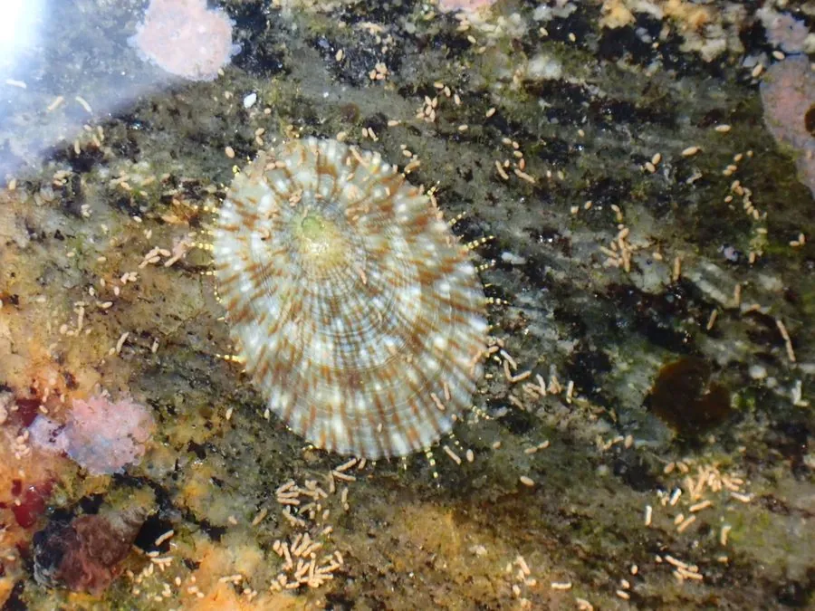

软体动物 · 动物界
嫁䗩 Cellana toreuma

壳形像小斗笠的帽贝，壳面有放射肋和褐色斑纹，吸附在潮间带的岩石上刮食藻类，退潮时成群可见。
- 分类
- 门软体动物门纲腹足纲目原始腹足目科帽贝科属帽贝属
- 栖息环境
- 岩礁海岸潮间带中上区，浪击强烈、藻类繁茂的岩石表面
- 地理分布
- 西北太平洋沿岸，包括中国南北沿海、日本、朝鲜半岛和台湾
- 保护级别
- 尚无保护级别；个体小，多为赶海小收获
物种志
嫁䗩的贝壳呈低圆锥形，形似小斗笠，壳长约三至五厘米，壳质较薄，壳面呈灰白至黄褐色，有细密的放射肋和褐色的斑纹，壳顶尖，略偏向前方，壳口宽大，呈卵圆形。它没有口盖，靠足部吸附在岩石上，吸力很强。头部有一对触角，眼睛位于触角基部。它用齿舌刮食岩石表面的藻类，是潮间带常见的植食性贝类。壳形低平，能减少海浪的冲击。
它分布于西北太平洋沿岸，包括中国南北沿海、日本、朝鲜半岛和台湾，栖息在岩礁海岸的潮间带中上区，喜欢浪击强烈、藻类繁茂的岩石表面，常成群吸附在石缝和砾石上。它昼伏夜出，退潮时吸附在岩石上，涨潮后爬出来刮食藻类，活动范围很小，常在原地留下一个浅坑。繁殖期在春夏，雌雄异体，幼虫经浮游阶段后附着到礁石上。它肉可食用，但个体小，多为赶海的小收获，目前尚无保护级别。
形态与习性
- 食性用齿舌刮食岩石表面的藻类
- 壳长约三至五厘米，壳形似小斗笠
- 壳面有细密放射肋和褐色斑纹
- 吸附无口盖，靠足部紧吸岩石
- 栖息环境潮间带中上区的岩礁表面
- 习性活动范围小，常在原地留下浅坑
趣味知识
- 嫁䗩的壳像一顶小斗笠，吸附在岩石上，退潮时成片暴露在空气中。
- 它总是回到同一个位置，把岩石磨出一个小凹坑，正好嵌住自己的壳。
- 它没有口盖，靠强壮的足部吸住岩石，想取下它只能趁其不备突然推动。